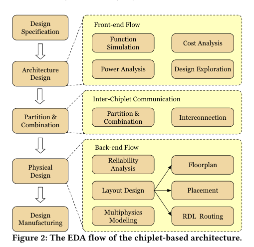
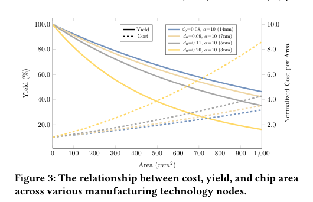
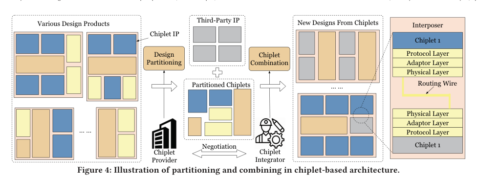
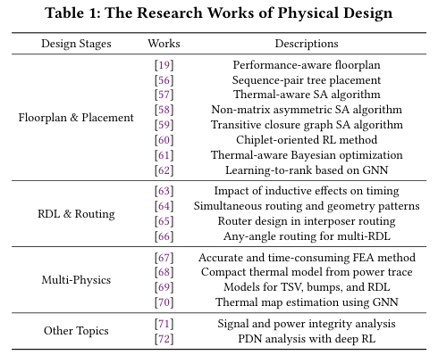

本报告由大模型自动生成，可能存在理解、归纳或数据转述错误；请以原论文为准。 SoftClay3D: Exploring Intra-Module Partitioning with True-3D Floorplan and Placement EnginesYifan Chen, Zixiao Wang, Zhe Liu, Ke Xu, Meng Li, B. X. Yu, Runsheng Wang, Yibo Lin · IEEE Transactions on Computer-Aided Design of Integrated Circuits and Systems · 2026 · 原文 · PDF 报告模型：gemini-3.1-pro-preview / high 这是一篇发表于 ASPDAC 2025 的综述文章《The Survey of 2.5D Integrated Architecture: An EDA perspective》。文章从电子设计自动化（EDA）的视角，系统性地回顾了基于芯粒（Chiplet）的 2.5D 集成架构的设计方法、当前面临的挑战以及未来的发展方向。 以下是按文章逻辑顺序进行的详细解读。 1. 引言 (Introduction)问题背景 长期以来，集成电路（IC，Integrated Circuit）行业一直遵循摩尔定律（Moore's Law，原文未说明其具体内容，仅指出技术进步使得能在单个裸片上集成更多晶体管，从而提升性能并降低成本）。然而，随着晶体管尺寸逼近物理极限，传统的单片系统（SoC，System-on-Chip，即将所有功能模块集成在同一块硅片上）面临着严重的瓶颈。首先，物理限制导致在单位面积内塞入更多晶体管变得极其困难；其次，先进光刻系统的制造成本急剧上升；最关键的是，随着芯片面积增大，硅晶圆的制造良率（Yield，原文未定义其具体含义）显著下降，导致成本收益无法维持。 核心概念与系统全貌 为了解决上述问题，业界提出了**芯粒（Chiplet）**与 2.5D 集成架构。
EDA 的关键作用 电子设计自动化（EDA）工具是实现 2.5D 架构的核心。作者在图 2 中展示了 2.5D 架构的 EDA 流程，数据与控制在其中自上而下流动： 
2. 芯粒的架构设计 (Architecture Design of Chiplet)本节主要讨论在架构探索阶段，EDA 工具如何评估和优化 2.5D 系统的宏观指标。 2.5D 架构的优势与应用 相比于 2D SoC，2.5D 架构具有三大优势：
仿真、功耗与成本分析 在架构早期，必须对系统进行仿真。但目前的 EDA 仿真工具面临挑战：它们通常无法准确建模芯粒间复杂的交互协议，也缺乏对异构工艺节点混合仿真的支持。在功耗分析方面，由于芯粒系统包含在不同工作负载下运行的异构组件，传统的静态或动态功耗模型（如 McPAT）需要结合机器学习（ML）技术进行校准，以适应新的工艺节点。 在成本分析方面，作者引用了图 3。该图展示了在不同制造工艺节点下，芯片面积与成本、良率的关系。图表清晰地证明了一个核心逻辑：芯片面积越大，良率下降越快，导致成本呈指数级上升；而将大芯片拆分为小面积的芯粒，可以显著拉平成本曲线。这里的成本分为非经常性工程（NRE）成本（如研发、掩膜制作等一次性投入）和经常性工程（RE）成本（如晶圆制造、封装等持续支出）。2.5D 架构的成本模型必须综合考虑这两者。  架构设计空间探索 (DSE, Design Space Exploration) 体系结构与 EDA 的双向联系在此处初步显现。 架构师需要决定芯粒的划分粒度（Granularity）。如果划分得太细，虽然良率和灵活性提高了，但会引入巨大的裸片间（die-to-die）通信延迟和功耗开销。这种架构侧的决策必须与 EDA 优化相联系。具体而言，跨层接口中传递的量为硬件设计配置（hardware design configurations），目标为 PPA（性能 Performance、功耗 Power、面积 Area）；在建模假设上，分析方法旨在创建描述硬件设计配置与 PPA 之间关系的轻量级、可解释模型；但在信息损失与局限性方面，这些方法通常需要广泛的领域知识，并在准确性（accuracy）和可扩展性（scalability）上面临限制。为了在庞大的设计空间中进行快速探索与设计空间修剪（原文未证明能找到全局最优解），研究人员开发了基于分析模型和基于机器学习（如强化学习，用于系统性探索芯片配置）的 DSE 工具。 3. 芯粒的划分与互连 (Partition and Interconnection of Chiplet)本节探讨如何将逻辑系统物理化为多个芯粒，并让它们高效通信。 划分与组合 (Partition and Combination) 作者通过图 4 展示了这一过程。划分的目标是将传统的单片 SoC 拆分为独立的芯粒模块。这在算法上通常被建模为超图划分（Hypergraph Partitioning）问题，其目标函数是最小化芯粒间的通信开销，约束条件是资源均衡和热分布。组合阶段则是将自研芯粒与第三方 IP 芯粒集成在一起。随着系统异构性增加，未来的 EDA 工具需要在划分阶段就提前引入热管理和机械应力的约束，这要求架构设计与物理效应进行跨层协同。  互连与通信 (Interconnection and Communication) 芯粒取代了单片设计后，原本在芯片内部的极速数据流变成了跨芯片的数据流。为了解决异构芯粒间的通信壁垒，业界推出了标准化的通信协议，如 UCIe（unified chiplet interconnect express，原文未提供中文翻译）。UCIe 提供了一个统一的接口规范，使得不同代工厂、不同工艺制造的芯粒能够互相理解。此外，还有 USR（ultra-short reach，原文未提供中文翻译）和 BoW（Bunch-of-Wires）等协议。在网络拓扑和路由算法方面，EDA 工具需要根据架构侧的流量特征（如 DNN 的数据复用模式），动态分配布线资源，甚至引入硅光子互连（Optical Communication）来满足极高的带宽需求。 4. 基于芯粒架构的物理设计 (Physical Design of Chiplet-based Architecture)物理设计是 EDA 的核心后端流程，负责将逻辑网表转化为可制造的几何版图。作者在表 1 中总结了该领域的近期研究。  布图规划与布局 (Floorplan and Placement) 概念澄清：在传统 SoC 的 EDA 流程中，“布局”指的是在芯片内部放置标准单元（Standard Cells）；但在 2.5D 架构中，本文的“布局”或“布图规划”指的是决定各个芯粒在中介层上的具体物理位置。 体系结构与 EDA 的深度耦合：芯粒的物理位置直接决定了它们之间的连线长度，进而决定了通信延迟（影响架构性能）和热量聚集（影响系统可靠性）。布局算法通常分为三类：
重布线层与布线 (RDL and Routing) **RDL（Redistributed Layer，重布线层）**是中介层上用于连接不同芯粒的金属布线层。由于 2.5D 封装的走线比单片芯片内部的走线长得多，会产生显著的寄生电感和电容效应（RLC 延迟）。EDA 布线工具不仅要寻找最短路径，还必须执行“协同优化”：考虑信号线的宽度、间距，甚至支持任意角度布线，以保护高速信号的完整性。 多物理场仿真 (Multiphysics Simulation) 2.5D 封装将多个高功耗芯粒密集挤在一起，导致严重的焦耳热（Joule Heating）现象。热量不仅会降低晶体管性能，还会引起材料的热膨胀，产生机械应力（导致芯片翘曲 Warpage）。因此，必须进行电、热、力多物理场耦合仿真。传统的有限元分析（FEA，原文未提供背景补充）虽然精确但极其耗时。目前的 EDA 研究趋势是开发紧凑热模型（CTM）或利用 graph convolutional network（原文未提供缩写及中文翻译）等 AI 技术，根据全局功耗特征快速预测热分布图（Thermal Map）。 其他主题 (SI/PI 与 PDN)
5. 挑战与未来方向 (Challenges and Future Directions)作者指出，目前的商业 EDA 工具大多是为单片芯片设计的，在应对 2.5D 架构时存在明显局限：
6. 结论 (Conclusion)文章总结了 2.5D 芯粒架构在性能、功耗和面积效率上的巨大潜力，并重申了 EDA 在仿真、物理设计和多物理场建模中的决定性作用。随着 AI 技术的融入，EDA 工具将更好地应对 2.5D 集成的复杂性。 贯穿全文的主线与批判性分析主线逻辑： 这篇文章的叙事主线是**“物理极限逼迫架构转型，架构转型倒逼 EDA 升级”**。 最初，半导体行业遇到了摩尔定律失效的问题（单片芯片太大导致良率崩溃、成本失控）。为了解决这个问题，业界引入了 2.5D 芯粒架构（将大芯片化整为零，通过中介层重新拼接）。然而，这种物理形态的改变打破了传统 EDA 工具的假设前提：原本在芯片内部的微观连线变成了跨芯片的宏观连线，原本均匀散热的单片变成了热量高度集中的异构集合体。因此，文章一步步引出了 EDA 在系统划分、互连协议（UCIe）、物理布局、RDL布线以及多物理场耦合仿真等各个环节必须做出的技术革新，最终目标是实现一个高度自动化、能处理跨层物理效应的下一代 EDA 平台。 关键假设、局限与过度推广的警告：
|